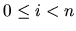

| The Blocks Problem |
In this problem you will model a simple block world under certain rules and constraints. Rather than determine how to achieve a specified state, you will ``program'' a robotic arm to respond to a limited set of commands.
The valid commands for the robot arm that manipulates blocks are:
where a and b are block numbers, puts block a onto block b after returning any blocks that are stacked on top of blocks a and b to their initial positions.
where a and b are block numbers, puts block a onto the top of the stack containing block b, after returning any blocks that are stacked on top of block a to their initial positions.
where a and b are block numbers, moves the pile of blocks consisting of block a, and any blocks that are stacked above block a, onto block b. All blocks on top of block b are moved to their initial positions prior to the pile taking place. The blocks stacked above block a retain their order when moved.
where a and b are block numbers, puts the pile of blocks consisting of block a, and any blocks that are stacked above block a, onto the top of the stack containing block b. The blocks stacked above block a retain their original order when moved.
terminates manipulations in the block world.
Any command in which a = b or in which a and b are in the same stack of blocks is an illegal command. All illegal commands should be ignored and should have no affect on the configuration of blocks.
The number of blocks is followed by a sequence of block commands, one command per line. Your program should process all commands until the quit command is encountered.
You may assume that all commands will be of the form specified above. There will be no syntactically incorrect commands.
The output should consist of the final state of the blocks world. Each original block position numbered i (  where n is the number of blocks) should appear followed immediately by a colon. If there is at least a block on it, the colon must be followed by one space, followed by a list of blocks that appear stacked in that position with each block number separated from other block numbers by a space. Don't put any trailing spaces on a line.
There should be one line of output for each block position (i.e., n lines of output where n is the integer on the first line of input).
10 move 9 onto 1 move 8 over 1 move 7 over 1 move 6 over 1 pile 8 over 6 pile 8 over 5 move 2 over 1 move 4 over 9 quit
0: 0 1: 1 9 2 4 2: 3: 3 4: 5: 5 8 7 6 6: 7: 8: 9: